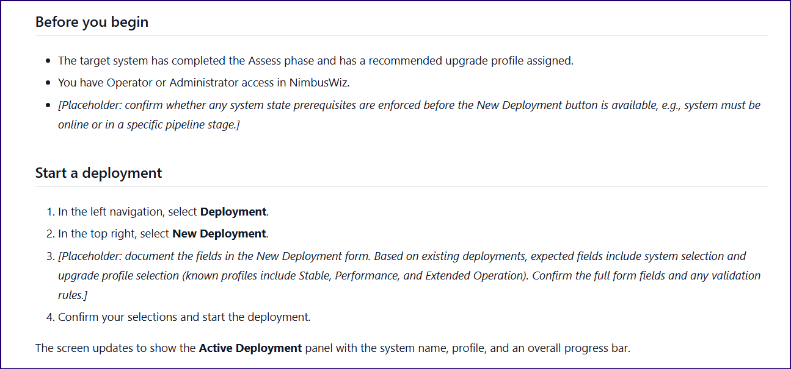
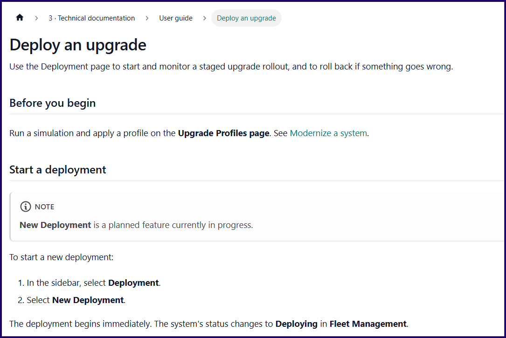
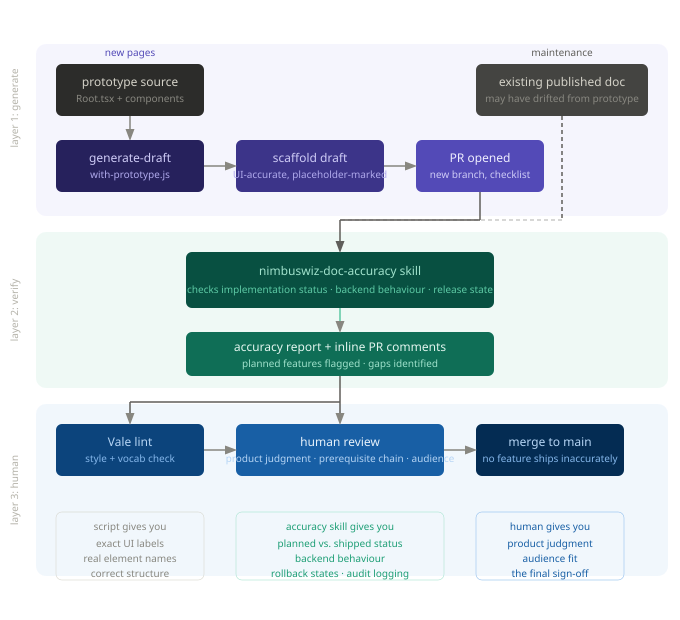

What works and what breaks in an AI-assisted docs pipeline
AI-generated docs look finished before they are, and that's the trap.
The structure is right, the tone is professional, the sections are in the correct order, it reads like documentation. But what you can't tell from a quick scan is whether the steps describe a UI that actually exists.
I built a three-layer pipeline to deal with it all. This post is about what each layer does, what it gets right, and what breaks if you skip it.
Why a generation script is worth having
The most tedious part of starting a new doc isn't the writing, it's the setup. Creating the file, adding frontmatter, getting the heading hierarchy right for the content type, making sure prerequisites are addressed...quite the list.
I used Claude to build a generation script that handles all that. generate-draft.js calls the Anthropic API with a system prompt that encodes your product context, controlled vocabulary, and content type structures. Give it a page title, a section, a content type, and an audience, and it gives back a correctly structured Markdown stub.
Keyword being stub. This is scaffolding, not writing.
It also handles the automation around the draft: writes the file to the correct path, creates a new branch, opens a pull request with a pre-flight checklist. Vale runs automatically on the PR, flagging controlled vocabulary violations and style issues. I, the human reviewer, see those inline comments alongside my own review.
So the review isn't "read this and decide if it's good." It's "complete these specific steps, resolve these specific warnings, then merge."
The placeholder markers are part of what makes this work: they're specific and hard to ignore. Not just "fill this in," but "fill in this exact thing, and here's why it needs to exist."
The first thing that goes wrong: invented UI
The initial script's system prompt used a baked-in product description that knew the product exists, but didn't know what was actually on the screen. So when I asked it to draft "Configure alert thresholds" for NimbusWiz, it produced steps that described a flight profile selector on the Monitoring screen, warning and critical threshold input fields, and a "Test alert" button; none of which existed in the prototype.
The model hadn't just left gaps where product-specific values were needed. It had invented whole interactions based on the fixed product description, which could alternately point to design docs or similar initial product ideas.
A user following those steps would get stuck immediately. The problem isn't just that the doc is wrong, it's that the doc sounds authoritative, which makes the incorrect version more dangerous than an obviously broken one.
The placeholder markers flag what the model knows it doesn't know. They don't flag what it made up confidently.
My fix: give the script prototype access
I had Claude build a second script: generate-draft-with-prototype.js loads the actual React component files before calling the API. You tell it which components are relevant via a COMPONENT_HINTS environment variable. It always loads Root.tsx for navigation labels. The system prompt then includes the real UI structure, and the model generates steps based on what's actually implemented.
For "Deploy an upgrade profile," the difference was concrete. The prototype-aware script used the exact nav label "Deployment" from Root.tsx, named all seven columns in the history table including Deployment ID and Progress, identified all three phase status indicators by exact icon (green checkmark, blue pulsing dot, grey clock), and named the log levels [INFO], [WARN], and [ERROR] with their colour behaviour. Every one of those details came directly from reading Deployment.tsx.
A developer walking those steps wouldn't hit a wrong label or a missing column. Real progress!
The second thing that goes wrong: rendered doesn't mean shipped
When I compared the prototype-aware draft alongside a draft I'd reviewed myself, the gap was instructive.
| Dimension | Scripted doc with prototype source | Non-scripted doc |
|---|---|---|
| Nav label | Exact from Root.tsx | Same |
| New Deployment status | Documented as implemented | Flagged as planned feature |
| View Full Logs status | Documented as implemented | Flagged as planned feature |
| Phase descriptions | Short, generic | Richer, actor-named |
| Rollback outcomes | Placeholder | Status sequence documented |
| Rollback limits | Not documented | In-progress only; contact admin after Completed |
| Audit logging | Not mentioned | Automatic logging documented |
| Before you begin | Vague, no cross-link | Specific prerequisite chain with link |
The script wins on surface UI detail but loses on everything behavioural.
The verified doc flagged two things the prototype-aware script missed entirely:
- "New Deployment is a planned feature currently in progress."
- "View Full Logs is a planned feature currently in progress."
The script treated both as fully implemented because the prototype renders those buttons whether the backend is ready or not. A React component doesn't know if a feature ships in this release. The source says the button exists. The script documents it as working.
A user following that draft would click New Deployment expecting something to happen. Nothing would.
This is the difference between reading a UI and knowing the product. The rollback section shows the same gap. The script left a placeholder: "confirm rollback confirmation step and any conditions." The verified version documented the actual sequence: status changes to Rolling back, then Rolled back, rollback is only available while a deployment is in progress, and once it reaches Completed the user needs to contact their administrator. None of that is in the JSX.
My fix: the accuracy skill
I built a Claude skill - doc-accuracy skill - to check what prototype source alone can't: implementation status, backend behaviour, and release state against sources that go beyond the component files.
It catches planned features that may be documented as shipped, finds rollback states, audit logging behaviour, and confirmation flows. It produces a report with inline PR comments, so I, the human reviewer work from a checked result rather than doing the checking myself. Confirming a checked result is much faster and more reliable than starting from scratch.
For new pages, I run the accuracy skill after the generation script. For maintenance, I run it first, to identify what's drifted from the product, and to fix it.
Why the human gate can't be automated
Even with both AI layers in place, a human in the loop isn't optional.
The accuracy skill handles verifiable checks, such as does this button exist, does this navigation label match, is this feature flagged as in progress. But it can't make a judgment call about what a user actually needs to know before they start a task.
The "Deploy an upgrade" doc's Before you begin is a good example of product understanding that goes beyond reading the source code.

Script-generated content

Final content
If a feature is documented as working when it's only planned, and that doc ships to production, the damage isn't just a confusing user experience. It's a broken promise from the product to the user. The human reviewer is the last check on whether anything in the doc makes a claim the product can't yet keep.
This is a non-negotiable check that shouldn't be delegated to AI.
The full pipeline

For new pages: the prototype-aware script reads the relevant component files, generates a UI-accurate scaffold, and opens a PR on a new branch. The accuracy skill runs on the draft and surfaces what needs attention. Vale flags style and vocabulary issues. A human reviewer applies product judgment and signs off before anything merges.
For maintenance: the accuracy skill runs first to find what's drifted. The doc-writer skill fixes it. Then Vale, human review, PR.
What could break at each layer
Without prototype access in the script, you get structurally correct docs with invented UI. The placeholder markers flag what the model knows it doesn't know. They don't flag what it made up with confidence.
Without the accuracy skill, planned features get documented as shipped. The prototype renders the button. The script documents it as working. The reviewer reads it and it sounds plausible. It merges. A user clicks and nothing happens.
Without the human gate, you have a pipeline optimised for speed. It'll eventually publish something wrong, because product judgment, the correct prerequisite chain, and the distinction between "this is how it works" and "this is how it was designed to work" can't be automated.
The underlying principle
Fast generation requires slow validation.
The script makes generation faster and more accurate. The accuracy skill makes validation more systematic. But the human is the one who knows whether a claim the doc makes is a claim the product can actually keep.
None of these layers replaces the others, and that's the design.